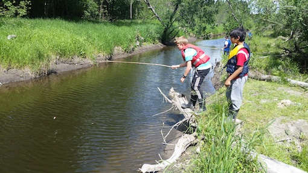

Bondegårdsferie, aktivitetsferie for hele familien - i Vestfold. Vi følger smitteverntiltakene.
Aarholt-tunet har tilbudt familier; bondegårdsferie, aktivitetsferie, familieferie siden 1992. Over 1.300 familier har hatt en del av sommerferien sin hos oss i denne perioden.
Aarholt-tunet er en gammel gård som har vært i Aarholt-familiens eie siden tidlig på 1500-tallet. På begynnelsen av 1990-tallet bygget Ingfrid og Svein den om til en Gjestegård.
Om sommeren er det bondegårdsferie med masse koselig aktivitetsprogram for hele familien, - hver dag fra søndag til fredag. Uke 26, 27, 28, 29 og 30 i 2021.
Gården tilbyr stell av dyr, gårdsaktiviteter, klatreaktiviteter, samhandling, undring og mestring.
Svært mange familier kommer tilbake år etter år.
På Aarholt-tunet kan 14 familier fylle de koselige boenhetene. Det er selvhushold i leiligheter med bad og minikjøkken. Klikk for å lese om boenhetene og se hva som er ledig i "menyen": BOENHETER/PRISER/TIDSPUNKTER.
Når så mange familier er samlet, finner barna lett lekekamerater.
Og når familiene sier det selv, så har vi begynt å si det:
- "Det er Aarholt-tunet som har det koselige familieprogrammet".
Programmet er fritt for elektroniske duppeditter... Så dette blir en skjermfri uke.
Programmet på bondegårdsferieukene er lagt opp slik at voksne deltar sammen med barna.
Programmet gjennom dagen på bondegårdsferie på Aarholt-tunet:
Etter at familiene har spist frokost hver for seg, møtes alle ved 10-tiden til en hyggelig informasjonssamling om dagen, ispedd noe morsomt og noe å undre seg på, etterfulgt av dyrestell. Hver familie får ansvaret for sine kaniner, og kan når som helst gjennom dagen plukke løvetannblader, og kose med alle kaninene og de andre dyra som hører til på Aarholt-tunet.
Etter dyrestellet, har vi en hovedaktivitet for dagen (se lengre ned). Etter dette pleier familiene å kose mer med dyra, gå en tur i skogen eller dra en tur på stranda kombinert med matinnkjøp. Og når de kommer tilbake ved 17-tiden er grillen tent. Og etter en god og lang middag på det koselige tunet, blir det enten Tarzanløype eller moro-kveld med allsang eller gårdsgøykonkurranser. Og så er det kveldsdyrestellet.
En NY hovedaktivitet på familieferien hver dag:
Hver dag er det en hovedaktivitet i tillegg til de faste innslagene. F.eks: Klipping av sau med håndsaks (alle som kan klippe får prøve). Vi tvinner tråd, og etterpå kan de som vil være med på karding og toving av saueull og lage et nydelig ullbilde som kan rammes inn.
Vi svever i en lang svevebane. Klatrer: enten på bruskasser eller låvevegg. Og selvsagt lærer dere hvordan dere kan utfordre dere selv og sette dere egne individuelle mål i læringsarenaen vår: "TARZANLØYPA".
Tur til Villmarkstunet. På veien besøker vi "Fredriklia" og får høre om eneboeren som bodde under jorda. Oldemoren til Svein kjente denne eneboeren.
Vi smaker kanskje på maur, og i Villmarkstunet flåtepadler vi oppover elva til Askjem-vannet. Noen plukker kanskje mark og prøver fiskelykken?
En dag besøker vi nabogården og da får vi også "hilse på" kuene og lære litt om dem. Mulig å få være med inn i fjøset for å se på melking og få være med å børste kuene.
Trygt miljø for barn og voksne på gårdsferie
Aarholt-tunet er tilrettelagt for familier.

Det betyr at når du har lært litt om hva dyrene spiser, og lært litt om deres kropps-språk, så kan barn og voksne være sammen med dyrene når de selv vil.
Gården drives økologisk, uten sprøytemidler og kunstgjødsel.
På Aarholt-tunet kan familien oppleve miljø, trivsel, deltagelse, hygge og annerledeshet og masse moro, voksne og barn sammen. En god grunn for mange til å komme igjen.
Det er også et trygt miljø uten biltrafikk siden vi holder til innerst på en blindvei.
Rundt gården
Rundt gården finner du nydelig lys bøkeskog. Vi ligger på nordlig grense i Europa for viltvoksende bøkeskog.
Det er mange turveier og stier hvor en kan oppleve både små og store dyr i tillegg til en svært rik flora. Vil dere gå et stykke gjennom skogen til et vann for å bade, er det mulig. Det går også an å overnatte i ett av de to utetunene vi har bygget, - om en også ønsker en slik opplevelse. (Se bildene like under som viser gapahuker, kråkeslottet og sekskanten i Bøketunet.)


Utenfor gården
Aarholt-tunet Gjestegård ligger sentralt i Vestfold, og man når 11 byer på rundt èn time med bil. Og alle strendene…. da ! Og severdighetene, golfbaner, fiskeelver og klatreparker...
Vil du ta med sykkelen, har vi sykkelkart over Vestfold. Men barn pleier sjelden å få brukt syklene de har med seg. Til det er det for mye å gjøre på gården.

Bestilling gjøres ved å kontakte:
Aarholt-tunet v/Ingfrid Weydahl og Svein Aarholt: tlf. 33 33 90 96
Hvis du mailer oss på oss@aarholt-tunet.no så sjekk at du får svar etter noen dager. Vi prøver å få sjekket mailer hver dag.
Fortell oss gjerne i første mail hvilken boenhet og uke dere ønsker (se "boenheter og priser") og gjerne også hvor mange dere er og alder på barna, (i tilfelle ønsket boenhet er opptatt kan vi komme med alternative forslag). Vi trenger også en adresse på dere.
Vi sender ut mail med leieavtale, brosjyre og depositumsfaktura på vinteren /ved bestilling, mens hovedforfallet for betaling av bondegårdsferieuka er i juni, da sender vi også et velkomstbrev og oppdaterte smitteverntiltak.
Hjertelig velkommen til gamle og nye gjester!
Hva media skriver om Bondegårdsferie på Aarholt-tunet:
"Sandefjord Blad" hadde i mars 2016 et intervju med Ingfrid og Svein om at familier fra hele landet drar på bondegårdsferie til Stokke. Så er det en som blir intervjuet om at folk liker å bo landlig. Og så er det mere om Aarholt-tunet: Klikk her - Sandefjords Blad, avisartikkel.
Se noen morsomme videoer og bilder på Facebooksiden vår også. Enda mer får du oppleve når du kommer.
Aarholt-tunet leirskole og bondegårdsferie


{kind=link}
{kind=link}
{kind=link}
{kind=link}
{kind=link}
{kind=link}
{kind=link}
{kind=link}
{kind=link}
{kind=link}